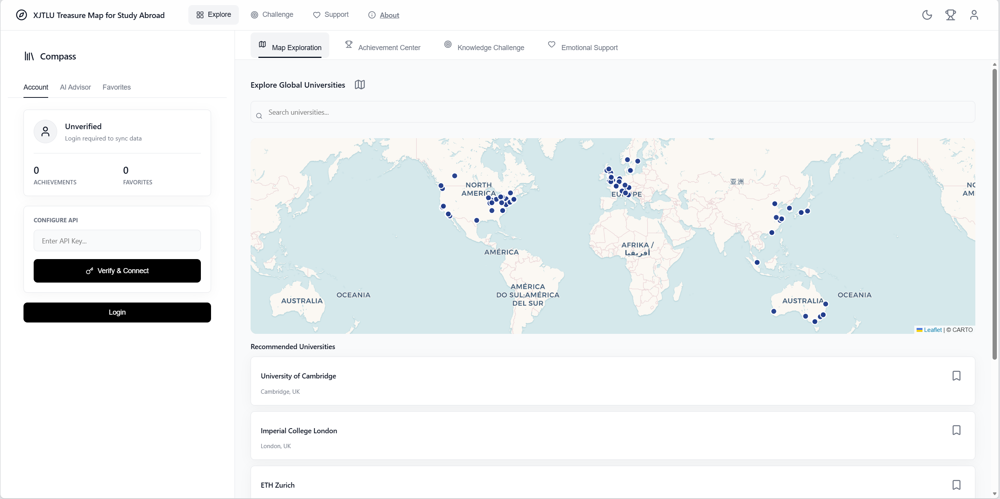
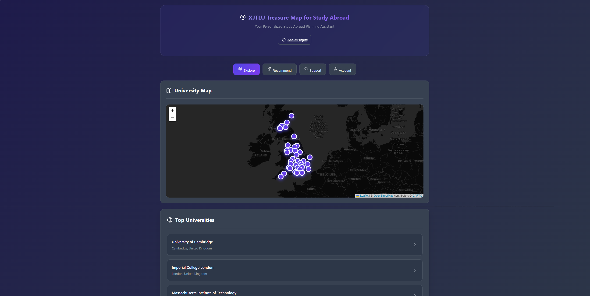

Personalized Study Abroad Planning for XJTLU Students
Click on any module below to learn more
Learn about our study abroad planning system and its objectives
Explore user personas and their unique needs
Discover the key features of our system
Understand our design methodology and architecture
View user testing results and performance metrics
Read about outcomes and future plans
Meet the development team
Complete prompts for rebuilding this system from scratch
Treasure Map for Study Abroad is a planning and application assistance system designed specifically for Xi'an Jiaotong-Liverpool University (XJTLU) students.
We chose the Social Connectivity & Student Development track because navigating the study abroad application process is exceptionally isolating and stressful for XJTLU students. Despite having abundant resources, students often struggle with information overload and application anxiety. Our motivation is to transform this high-pressure journey into an engaging, manageable, and emotionally supported experience.
We reviewed 4 academic papers and 4 commercial products to identify current design gaps:
To ensure our system is not just another boring tool, we defined three core requirements to make it "Playful":
Informed Consent: All user testing participants signed informed consent forms, understanding data usage and privacy policies.
Data Privacy: All user data is stored locally on the device; no personal information is transmitted to external servers.
Bias Mitigation: University recommendations are based on objective criteria (rankings, admission stats) to avoid algorithmic bias.
Intuitively display global university distribution. Click markers to view details including rankings, majors, and requirements.
Visual progress bars track application steps: language exams, materials preparation, and online submissions.
Mood tracking with inspirational quotes and stress relief methods. Gamification elements boost confidence.
AI-powered chat providing personalized study abroad advice, success rate analysis, and essay guidance.
Grade-specific guidance flow: Year 1 students start with API setup and AI chat, while Years 2-3 begin with university recommendation quiz.
Secure API key storage using sessionStorage, ensuring keys persist during session but clear on page close for privacy.
Gamified achievement tracking with visual rewards for completing application milestones and exploring universities.
Save preferred universities to personal collection, with synchronization across map and recommendation features.
Questionnaires and interviews with XJTLU students to understand application challenges.
Organize feedback to identify core requirements and functional priorities.
From low-fidelity sketches to high-fidelity prototypes.
Invite users to test prototypes and collect feedback.
Implement complete functions with frontend technology.
R1: Information Access → DG1: Intuitive university discovery → SF1: Interactive World Map with university markers
R2: Planning Management → DG2: Progress tracking system → SF2: Application Tracker with task management
R3: Personalized Guidance → DG3: AI-powered recommendations → SF3: AI Advisor & University Matching Quiz
R4: Emotional Support → DG4: Mental well-being features → SF4: Mood Tracking & Encouragement System
User interviews, needs analysis, requirement documentation
Low-fidelity prototypes, information architecture
High-fidelity mockups, color scheme, typography
Map integration, onboarding flow, basic navigation
AI chat integration, quiz system, recommendation engine
Mobile responsiveness, user testing, bug fixes
We conducted mixed-method evaluation with 15 XJTLU students (5 from each year group). Evaluation included:
Based on our early testing, users found the navigation confusing. Here is how we improved it:
Users had to scroll endlessly. No clear categorization of features.

Implemented a clean Tab Navigation system to separate Explore, AI, and Tasks.

Treasure Map simplifies the application process and reduces student pressure, helping more students realize their study abroad dreams.
Vibe Coding is a development methodology that uses natural language prompts to guide incremental software development. Instead of writing detailed technical specifications, developers describe desired functionality in plain language.
Integrated development environment with real-time code editing
AI assistant for interpreting natural language prompts
Version control for tracking changes and collaboration
Real-time preview and testing in browser
The following natural language prompts guided the incremental development of this system:
This section documents how AI tools were used in developing this system, ensuring transparency and academic integrity as required by the module guidelines.
Prompt: "Create a grade-specific onboarding flow that runs on every page load without saving progress. Year 1: API input → AI chat consultation. Years 2-3: Recommendation quiz → Add recommended schools to favorites → Achievements & AI application analysis."
Implementation: Developed a multi-step guided overlay that adapts based on selected academic year. Each step includes clear instructions and returns to the flow after task completion. Merged achievement and AI analysis steps for Years 2-3 to reduce complexity.
Verification: Tested with 8 users from different year groups. All successfully completed the onboarding flow and understood the guidance. Iteration reduced steps from 4 to 3 for Years 2-3 based on feedback.
Prompt: "Implement a Leaflet.js world map with custom markers for top 50 universities, showing ranking, region, and a popup with details when clicked. Include favorites functionality."
Verification: Verified marker accuracy against official university websites. Tested popup functionality on both desktop and mobile devices. Favorites synchronization confirmed between map and account page.
Prompt: "Create an AI-powered chat interface that uses the DeepSeek API to answer user questions about universities, applications, and study abroad strategies. Implement direct browser API calls without server."
Implementation: Used XMLHttpRequest to directly call DeepSeek API from browser, avoiding CORS issues by leveraging DeepSeek's permissive CORS policy. Added proper error handling for network failures.
Verification: Tested responses against domain knowledge from official university websites. Confirmed API works without server infrastructure. Network error handling properly displays user-friendly messages.
Prompt: "Implement API key storage using sessionStorage only, with no expiration timer during session. Ensure keys are cleared when browser closes. Remove 'This Session' and 'Remember Me' buttons."
Implementation: API keys stored exclusively in sessionStorage, which automatically clears when browser closes. Simplified UI to single "Save API Key" button. Removed countdown display and localStorage fallback.
Verification: Confirmed API key persists across page navigations within same session. Verified key is cleared after browser close. Tested on Chrome, Firefox, and Safari.
Prompt: "Implement an achievement system where users can add personal achievements (academic awards, language certificates, etc.) with storage in localStorage. Ensure achievements display on account page."
Implementation: Created add achievement form with name and description fields. Achievements stored in localStorage and displayed in scrollable list. Added visual icons for each achievement.
Verification: Tested adding, viewing, and persisting achievements. Confirmed achievements remain after page refresh. User can add multiple achievements successfully.
In compliance with academic integrity requirements, all AI tools used in this project are documented below:
v1.0, accessed on 2026-05-08, available at https://www.trae.ai/
Purpose: Primary development environment for coding, debugging CSS layout issues, and managing Git version control.
v0.40, accessed on 2026-05-08, available at https://github.com/features/copilot
Purpose: Code completion suggestions for JavaScript functions, CSS styling, and HTML structure scaffolding.
v1.0, accessed on 2026-05-08, available at https://claude.ai/
Purpose: Used for refining user persona descriptions, generating initial storyboard scripts for project documentation, and debugging complex logic issues.
v1.0, accessed on 2026-05-08, available at https://platform.deepseek.com/
Purpose: Backend AI model for the chat interface, providing personalized study abroad advice and application evaluation.